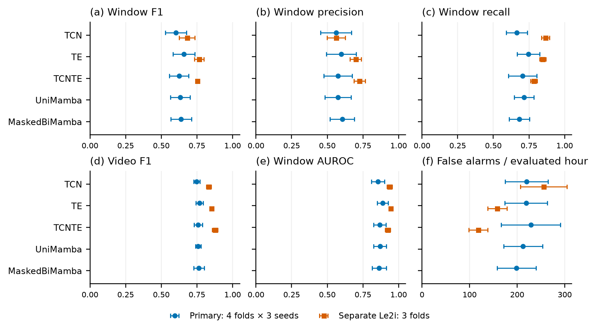
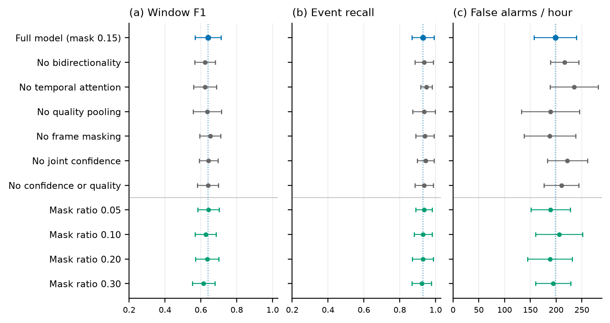
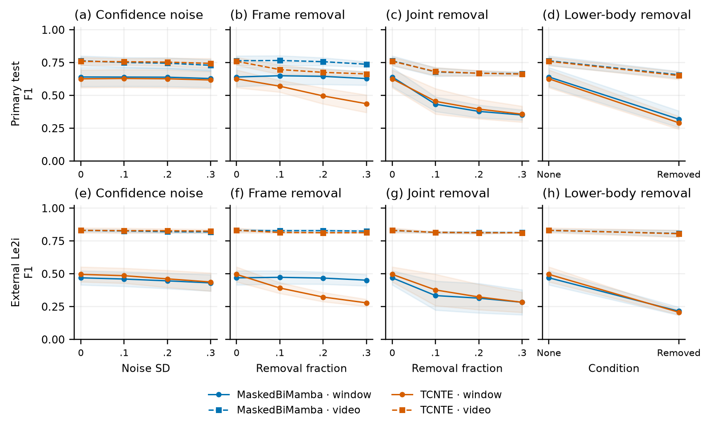
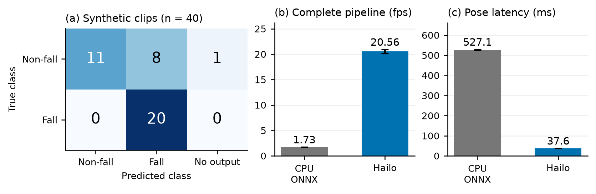
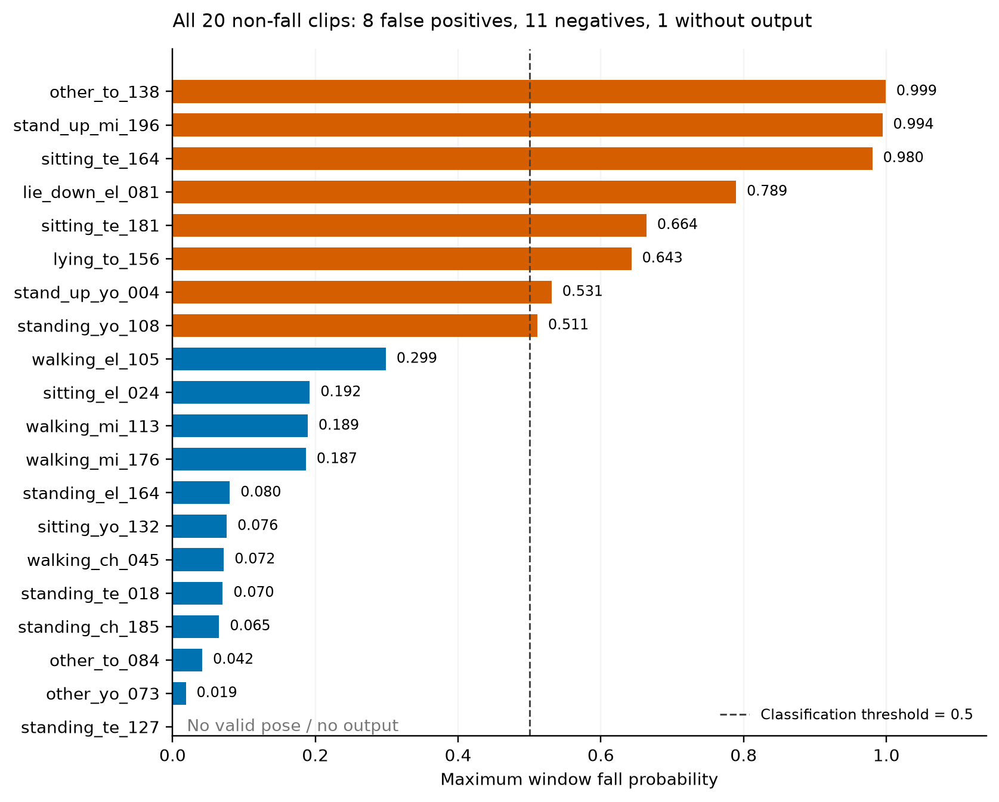
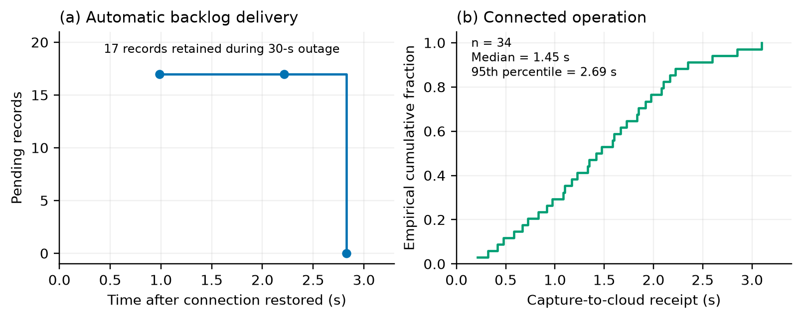
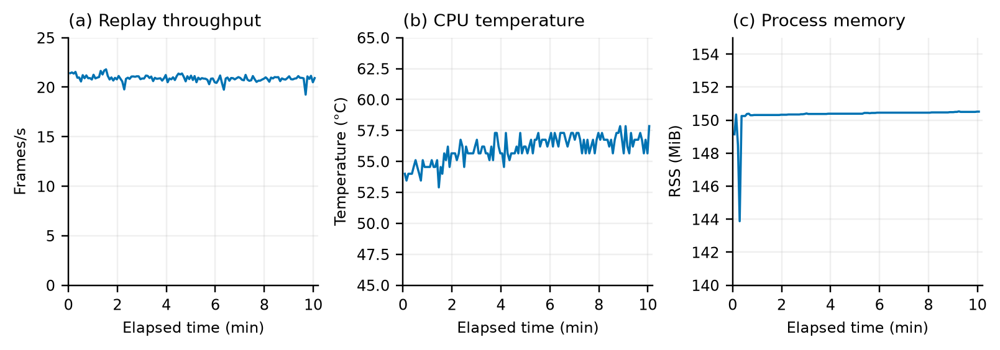

Fall detection
on the edge
Quality-aware temporal modeling, independent Raspberry Pi inference, and cloud delivery after reconnection.
Jiahao Zhao · Chengyi Xu · Yaorong Huang
Zhonglin Chang · Jiayun Song
Final project presentation · 20 September 2026
Complete local video pipeline
Raspberry Pi 5 + Hailo-10H
Throughput versus CPU ONNX
Same YOLOv8s-pose comparison
Motion provides the context
A single posture can resemble sitting, kneeling, lying down or falling.
We target indoor assisted-living spaces. Caregivers need an event history they can review, including events recorded while the network is unavailable.
- Observe locallyExtract body joints near the camera.
- Interpret a short sequenceRelate descent to surrounding motion.
- Keep the historyStore decisions locally and deliver them later.
Recent research
TCNTE · Yu et al., 2025
Temporal convolutions with Transformer attention for skeleton sequences.
Fall-Mamba · Zhang et al., 2025
Masked temporal modeling with multimodal fusion.
StoneGAT · Chun et al., 2025
Skeleton geometry and confidence-aware graph attention.
Inference stays on the Raspberry Pi
The cloud receives records. It is not needed to compute a fall prediction.
Camera / video
USB capture or local file
Pose extraction
Hailo-10H · YOLOv8s
Fall classifier
Pi CPU · MaskedBiMamba
Local records
SQLite + alert state
At the device
One-second windows, 30 time steps, up to five classifications per second. A local page shows annotated frames, current predictions and pending records.
After reconnection
The cloud stores pending records and acknowledges successful writes. Repeated delivery does not create duplicate records, and original capture times are retained.
Implementation: local pose + ONNX temporal classifier; CPU pose inference provides a fallback when Hailo is unavailable.
MaskedBiMamba
Twelve body joints supply normalized coordinates and confidence. A separate stream describes observation quality.
Temporal context
Attention relates positions; forward and reverse Mamba branches model motion in both directions.
Quality-weighted pooling
A learned gate uses mean joint confidence, visible-joint fraction and person confidence.
Method details and mathematical definitions
Pose features have shape 30 × 36: x, y and confidence for each of 12 joints. Masking uses mt ∼ Bernoulli(1 − ρ), with ρ = 0.15 during training. Four attention heads operate on a 64-dimensional embedding. Two residual Mamba layers are used in each direction.
The classifier is trained with weighted focal loss. The Mamba operator follows Gu and Dao; the project contributions are the temporal composition, quality processing, evaluation and system integration.
Separate protocols, explicit metrics
| Dataset | Videos | Role | Window count |
|---|---|---|---|
| CAUCAFall | 100 | Primary, 10 participants | 7,869 combined |
| GMDCSA-24 | 160 | Primary, 4 subject groups | |
| Le2i | 190 | Separate baseline comparison + external test | 12,650 |
| OmniFall-Synthetic | 40 | Edge deployment sample: 20 fall / 20 non-fall | 663 device predictions |
Primary comparison
Four subject-disjoint folds × three seeds = 12 evaluations per model. Training uses Adam, 100 epochs and validation F1 for model selection. The same windows and pose features are used across five architectures.
What the numbers mean
Recall = TP / (TP + FN)
F1 = 2TP / (2TP + FP + FN)
Reported error bars are sample standard deviations, not confidence intervals.
Video, event and false-alarm metrics
Video probability is the maximum of its window probabilities. At threshold 0.5, overlapping positive windows are merged into intervals. Reference events are paired one-to-one with overlapping predicted intervals.
FA/h = unmatched predicted intervals / evaluated hours
Exposure includes the retained parts of both fall and non-fall videos. FA/h here is an experimental interval metric, not an operational alert burden measured over continuous daily monitoring. Accuracy = (TP + TN) / (TP + TN + FP + FN); specificity = TN / (TN + FP). AUROC measures ranking over thresholds. Clips with no valid output are reported separately.
Precision and recall lead to different choices
TE has the highest clean window F1: 0.6581. It also has the highest event recall, 0.9767.
MaskedBiMamba has the highest window precision: 0.6048. Its video F1 is 0.7632 and its unmatched-event rate is the lowest, at 198.5 per evaluated hour.
Exact values and the separate Le2i comparison

Which changes contribute?
Removing bidirectionality or temporal attention reduces window F1. Removing masking or quality pooling can improve clean F1, so those components require tuning rather than an unconditional benefit claim.
All ten variants and exact values

Temporal context helps when frames disappear
At 30% frame removal, window F1 is 0.6276 for MaskedBiMamba and 0.4361 for TCNTE.
Both models deteriorate when joints or the entire lower body are missing. Perturbations are applied to extracted poses, not to the original images.
All robustness panels and exact values

Complete inference without an external network

Paired throughput
20.56 ± 0.39 fps with Hailo, versus 1.73 ± 0.02 fps with CPU ONNX. The complete pipeline includes decoding, pose extraction, classification and record writes.
Forty synthetic clips
39/40 valid outputs; 20 true positives, 11 true negatives, 8 false positives and 1 missing output. Accuracy among classified clips: 79.49%. Clip F1: 0.8333.
Only 14/20 positive clips produce a positive window ending within the annotated fall interval. Clip-level recall is not the same as detection during the fall.
Hardware measurements and error analysis

Records survive interruptions

A 30-second upload-path outage leaves 17 pending records. The queue is first observed empty 2.83 seconds after recovery. Replaying 34 records after a cloud restart creates no duplicates.
Delivery observations, latency samples and stability

The 603.8-second replay processes 11,016 frames and writes 2,312 records. Peak process memory is 150.53 MiB, with no reported CPU throttling. This is a short replay session, not an all-day deployment study.
Show the device working independently
- Connect a displayMicro-HDMI from the Pi to a monitor or projector. Open the local dashboard.
- Show valid observationsFrame the whole body; show skeletons, current predictions and saved records.
- Disconnect the networkTurn off Wi-Fi and unplug Ethernet. Continue inference and show pending records.
- ReconnectShow the queue drain and the cloud history retain original event times.
Local observation page
Camera preview
Pose landmarks
Current fall probability
Alert state
Pending-record count
The local page is served by the Pi. This presentation is a static evidence viewer and does not connect to the device or cloud backend.
The camera currently needs full-body framing. Public or synthetic local videos provide a clearly labeled fallback demonstration.
Live scene readiness is separate from the completed offline video benchmark. The final demonstration includes the working cloud backend after reconnection.
What the project establishes
Delivered
- A quality-aware bidirectional temporal classifier, with baseline, ablation and robustness evaluation.
- Independent Pi pose extraction and fall classification, accelerated by Hailo.
- Local records, recovery after interruption, and verified cloud delivery.
Boundaries
- TE leads clean F1. Some added components do not improve clean performance.
- External Le2i video F1 is close to its all-positive baseline of 0.8125; cross-dataset discrimination remains limited.
- False alarms, missing body geometry and camera placement remain important deployment issues.
- The current evidence does not measure all-day reliability, power consumption or clinical outcomes.
Inspect the reported evidence
Browse all 1,853 exported aggregate rows, including archived comparisons. The primary presentation uses the current four-fold, three-seed study. Edge evidence is available below.
| Suite | Model / condition | Metric | Mean | Sample SD | n |
|---|
Edge measurements and connected delivery samples
The edge sections above contain complete expanded tables. Download the public edge summary for the paired timing measurements, synthetic confusion matrix, stability statistics, queue observations and all 34 connected latency values.
All exported hardware and recovery fields
Sources and reproducibility
All presentation values are derived from the project's verified aggregate CSV and public edge summary. Figures are from the final project report. This static site contains no production tokens, device addresses, raw camera footage or backend connections.